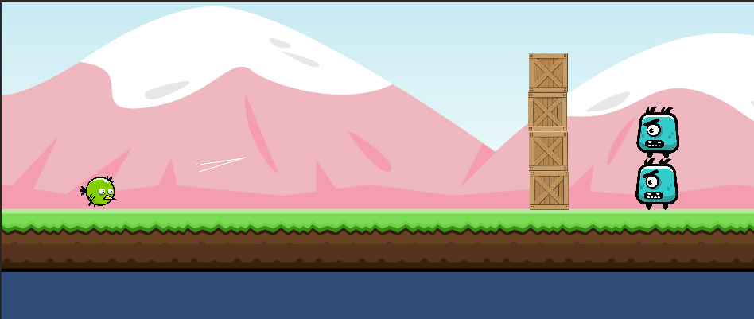

Toen ik begon met C# besloot ik om een eigen projectje te starten in Unity game engine, het is in principe hetzelfde als angry birds aangezien de mechanics vrij simpel zijn. Als je een monster op het hoofd raakt met jezelf of met een crate dan gaan ze dood, als je ze niet hebt verslagen en stilstaat voor 1 seconde dan reset hij het level. als het je lukt om alle monsters te verslaan ga je naar het volgende level.